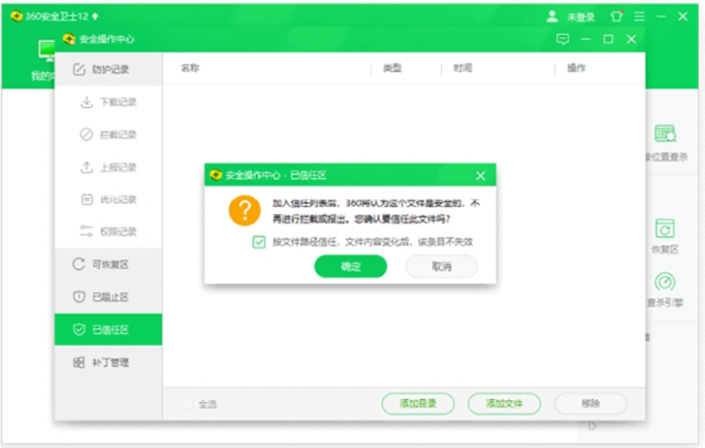
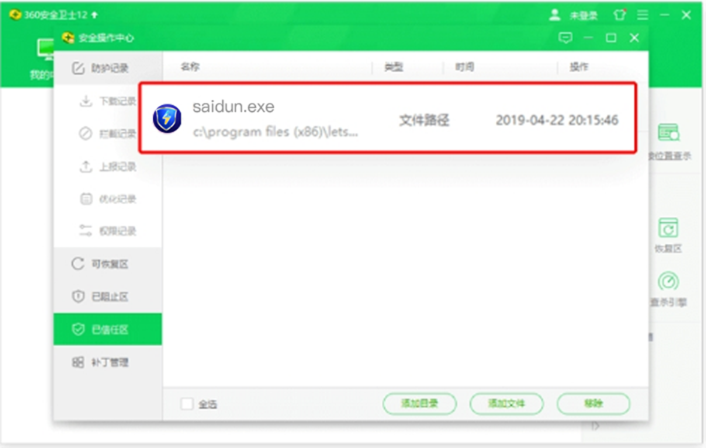

返回
欢迎查看常见问题
智慧服务，让您使用更简单

如何设定 360 卫士让赛盾 VPN 正常工作
如果您电脑中有 360 安全卫士，它会在一定程度上限制赛盾的正常运行，您可以查看本文章解决这个问题
360 安全卫士会将 赛盾VPN 判断为有威胁的软件，从而出现将其强行卸载的情况。赛盾VPN 有威胁?不，赛盾VPN 是拥有国际认证的安全软件，在软件中镶嵌有国际认证的安全证书，这一切都是 360 安全卫士的误判。
注:右击安装成功的 赛盾VPN 图标打开文件位置看到证书详细情况。
通过将赛盾VPN 设置到 360 软件的白名单使其正常运行，具体步骤如下

1、打开 360 安全卫士;
2、点击主界面菜单栏中的木马查杀;
3、点击右方界面的信任区
4、点击添加文件，选择 赛盾VPN 并打开
6、勾选弹出确认提示
7、点击确定完成操作
注:在不同版本的 360 安全卫士中，点击木马查杀后，信任区位置可能不同，具体操作是相同的。
设置成功后界面如下图所示。

赛盾VPN 为了不断适应各个国家的网络策略、政策的变化，会每隔一段时间进行升级更新，升级后会覆盖旧的版本使白名单设置失效，需要您升级后重新设置一下，来确保软件的正常运行。
注:若您在下载和使用过程中有任何问题，您随时可以发送邮件给 {{kfEmail}}，将由专业的客户服务人员帮助您获取到最新版本的软件。